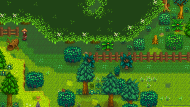

Tronco grande
Ir a la navegación
Ir a la búsqueda
| Tronco grande | |
 |
|
| Información | |
| Origen | La granja, Bosque Tizón |
| Estación | |
Un Tronco grande es un tipo de Árbol que hay en Stardew Valley. Se pueden encontrar en la granja y en el Bosque Tizón, bloqueando la entrada al Bosque secreto. Los troncos grandes sueltan 8 unidades de Madera noble cuando se talan con un Hacha de acero o mejor. Una vez talados, no vuelven a salir

Entrada al Bosque secreto con el tronco que la bloquea
| Árboles | |
|---|---|
| Árboles | Arce • Palmera • Pino • Roble • Árbol de caoba |
| Árboles frutales | Albaricoquero • Cerezo • Granado • Manzano • Melocotonero • Naranjo • Platanero • Árbol de mango |
| Semillas | Bellota • Piña • Semilla de arce • Semilla de caoba • Semilla de árbol místico • Semilla musgosa |
| Fruta | Albaricoque • Cereza • Granada • Manzana • Melocotón • Naranja • Mango • Plátano |
| Otros | Árbol místico • Árbol seta • Árboles de lluvia verde • Arbusto de té • Tocón grande • Tronco grande |